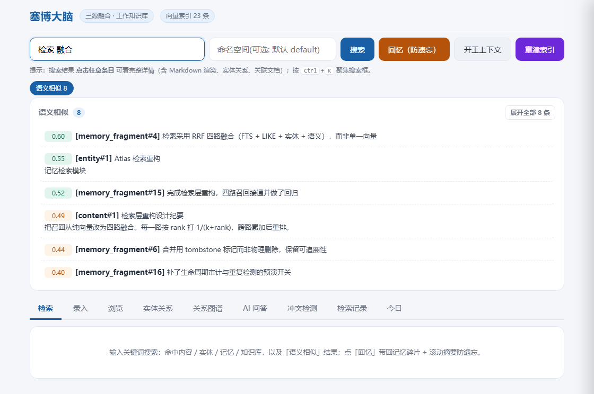
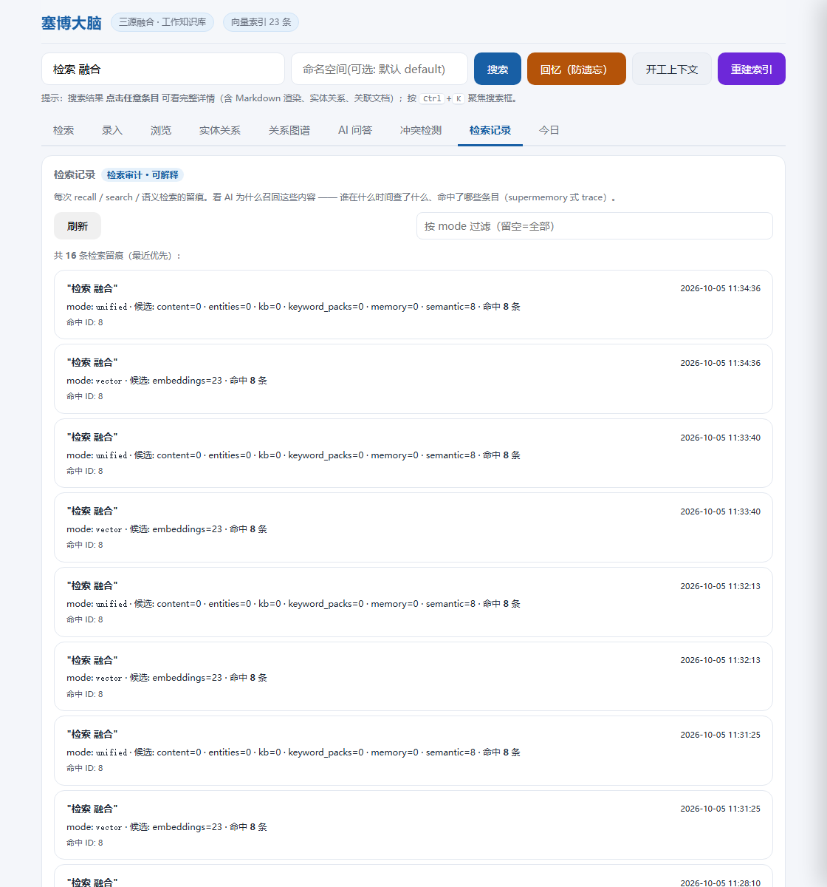
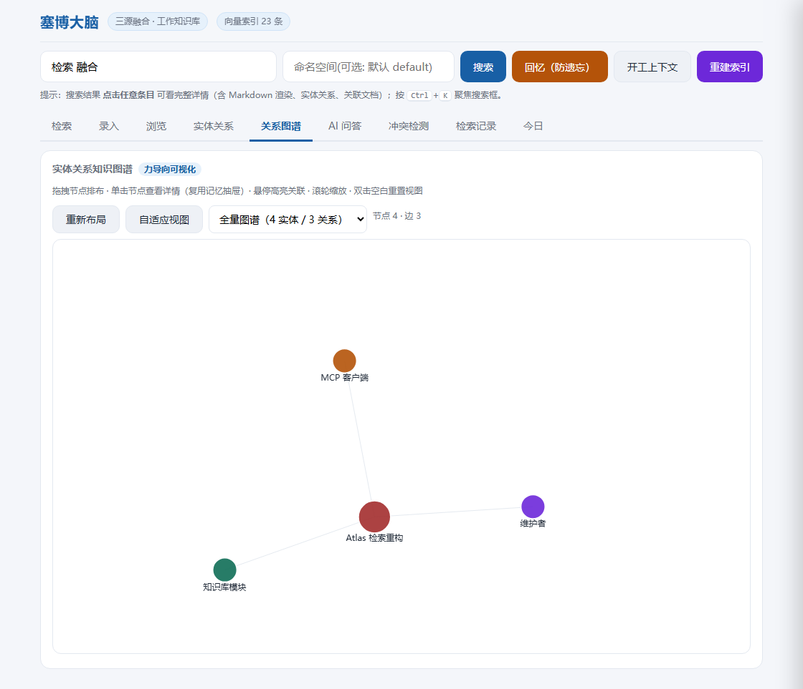

四个具体的、每天都在发生的麻烦。
上午做的事下午就忘，跨会话没有上下文。开工时用一条命令把「滚动摘要 + 记忆碎片 + 关联实体」带回来。
笔记、文档、决策散落在各处。统一入库后，全文、语义、实体、模糊四路并行召回。
FTS5 默认分词按空格切词，对中文几乎不可用。改用 trigram（3 字滑窗），短词自动回退模糊匹配。
importance 自动分级、过期自动降权、重复项可合并（且可撤销），检索侧还有时间衰减排序。
没有魔法，都是可验证的工程选择。
| 能力 | 实现 |
|---|---|
| 存储 | SQLite 单文件 cyber_brain.db，备份即拷文件、换机零迁移 |
| 中文全文检索 | FTS5 + trigram 分词（3 字滑窗）；不足 3 字自动回退 LIKE |
| 语义检索 | bge-small-zh-v1.5 本地向量（fastembed + ONNX Runtime，512 维，可离线） |
| 混合检索 | RRF 四路融合：FTS-BM25 + LIKE + 实体 + 语义向量，按 1/(k+rank) 累加重排 |
| 时间感知 | recall --days N 限定时间窗；高价值记忆不衰减，其余按年龄降权 |
| 生命周期 | 自动分级 + 过期降权 + 重复合并（默认只预演，标记而非删除，可撤销） |
| 审计 | 检索留痕 + 变更留痕两张表，行为与变更都可回溯 |
| 接口 | Flask Web 界面 + MCP 服务器（streamable HTTP） |
截图取自虚构的演示数据（tools/_seed_demo.py 可一键复现），不含任何真实内容。

统一搜索：四类数据一次命中
检索审计：召回来源可回溯
实体关系图谱三步跑起来。零服务依赖，不需要数据库或向量服务。
# 1. 安装依赖
pip install -r requirements.txt
# 2. 写入一条记忆（importance 自动分级）
python cyber_brain.py --db cyber_brain.db frag --add --type fact --content "今天是周五" --subject work
# 3. 检索 —— 全文 + 语义 + 实体 + 时间感知
python cyber_brain.py --db cyber_brain.db recall "周五"
python cyber_brain.py --db cyber_brain.db search "关键词"
# 附：Web 界面 / MCP 服务器 / 演示数据
python web_ui.py # http://127.0.0.1:8899
python mcp_server.py # http://127.0.0.1:8765/mcp
python tools/_seed_demo.py.gitignore，
仓库中不存在任何真实数据文件 —— 克隆后需自行初始化、自行灌入内容。
文档中提到的规格描述仅用于说明系统的设计承载能力。
被 Agent Memory Atlas 收录并做过逐行代码审查。
该图谱以固定 7 项机制对每个系统打分。对 v1.5.0 的评级是 0/7，
指出的问题集中在同一类毛病：机制已经写出来了，但没有接线。
v1.6.0 逐条修复（去重改为两段式、检索侧补 status 谓词、修 namespace 缺列、
新增变更审计与撤销合并、补测试套件），完整记录见
CHANGELOG。
语境参考：该图谱的统计显示其收录系统中 44% 同样为 0 或 1 项；其方法论说明未标记表示
「在该 commit 上未找到该机制」，而不代表系统需要它。